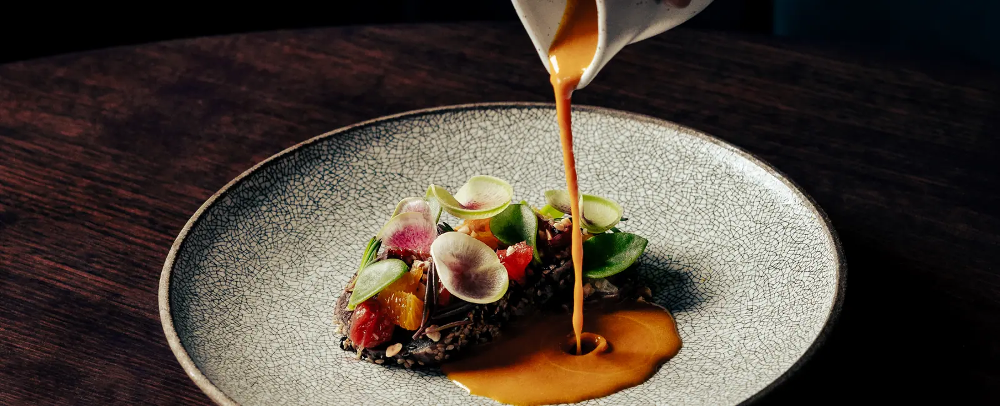
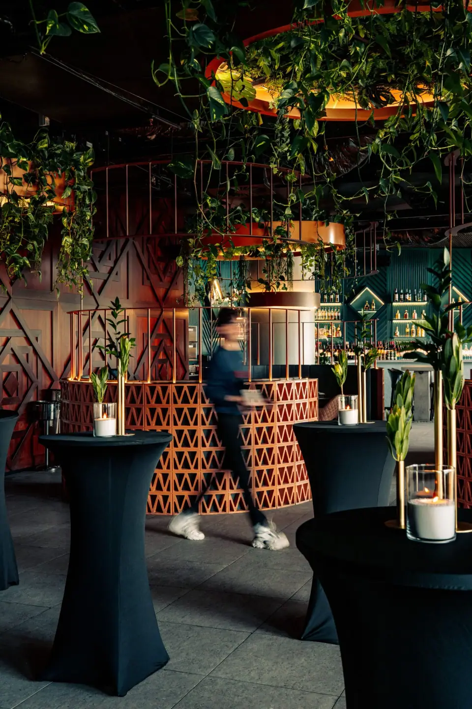
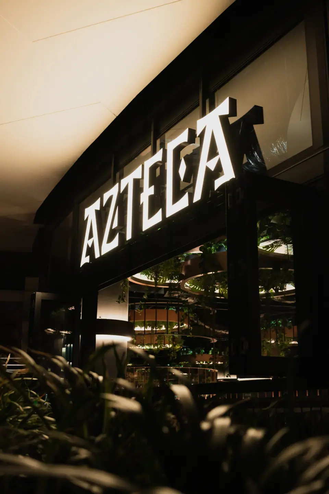
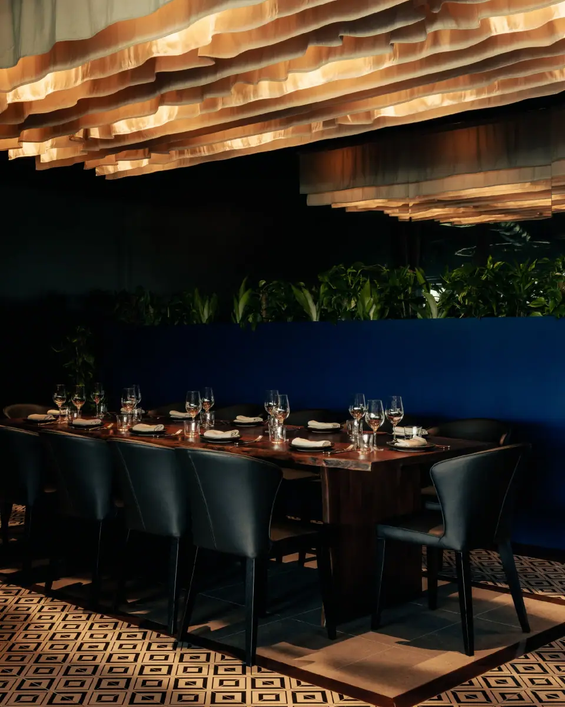

A culinary bridge between continents.
Prepare for an evening of intrigue as you step inside a venue inspired by Latin America with touches of Asian fusion.
- HoursMon & Tue 5pm to late
Wed to Sat 12pm to late
Sun 12pm–3pm - AddressLevel 4 Dining Area, Queen's Wharf, Brisbane City QLD 4000
- Phone(07) 3377 3420
The Terrace, Level 4
From our intimate dining room to the expansive terrace with a view of the river, we invite you to immerse yourself in a world of flavour, elegance, and electric ambiance.
Dine in our restaurant or on our terrace. Both are air-conditioned, and the terrace is fully covered.

Queen's Wharf
Level 4, The Star Brisbane
- Free parking at The Star or Queen's Wharf when you dine: show your parking ticket to the host for a free exit pass.
- A private dining room for up to 12 guests; the full venue holds up to 160 for events.
- Groups of 20 or fewer can book online. Walk-ins are welcome; bookings are recommended.
- Smart casual dress code.

